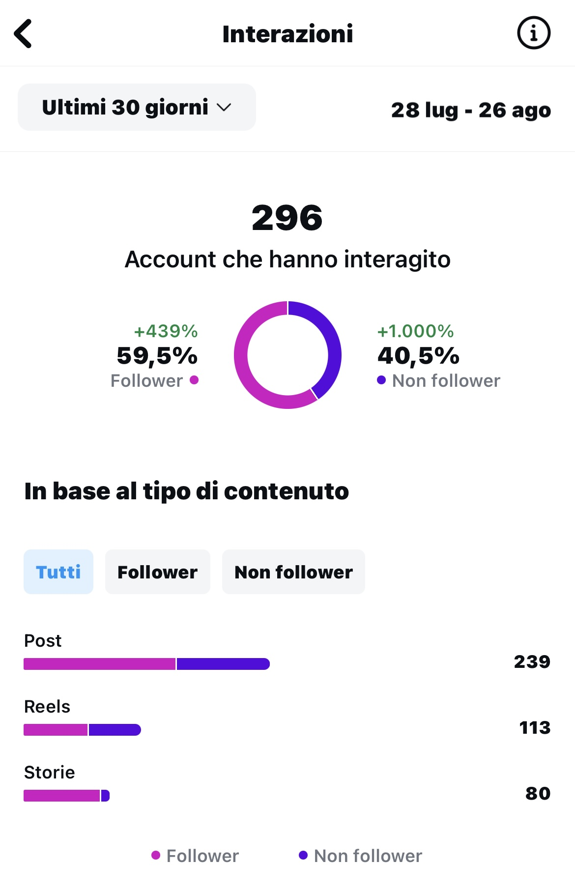
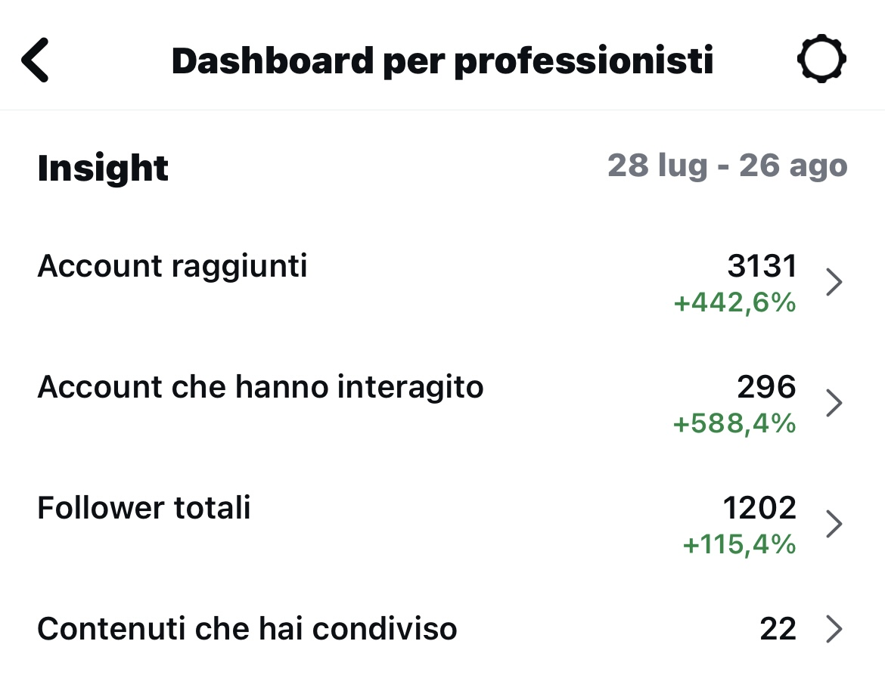

I Gomitoli di Katia
Account di Prospecting
In questo profilo, l'attenzione è rivolta alla creazione di contenuti capaci di suscitare interesse in potenziali clienti che ancora non conoscono il brand.
Senza l'ausilio di campagne pubblicitarie Meta, è stato possibile ottenere risultati significativi.
